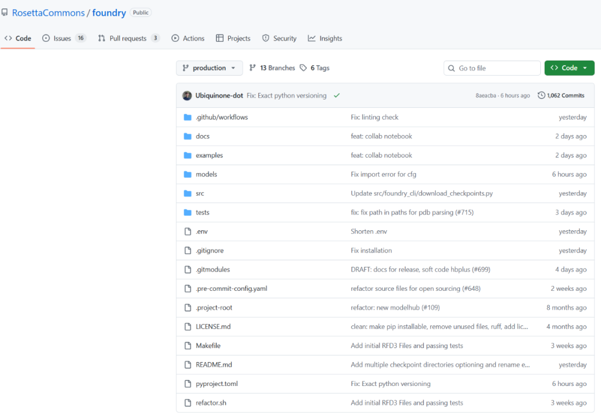
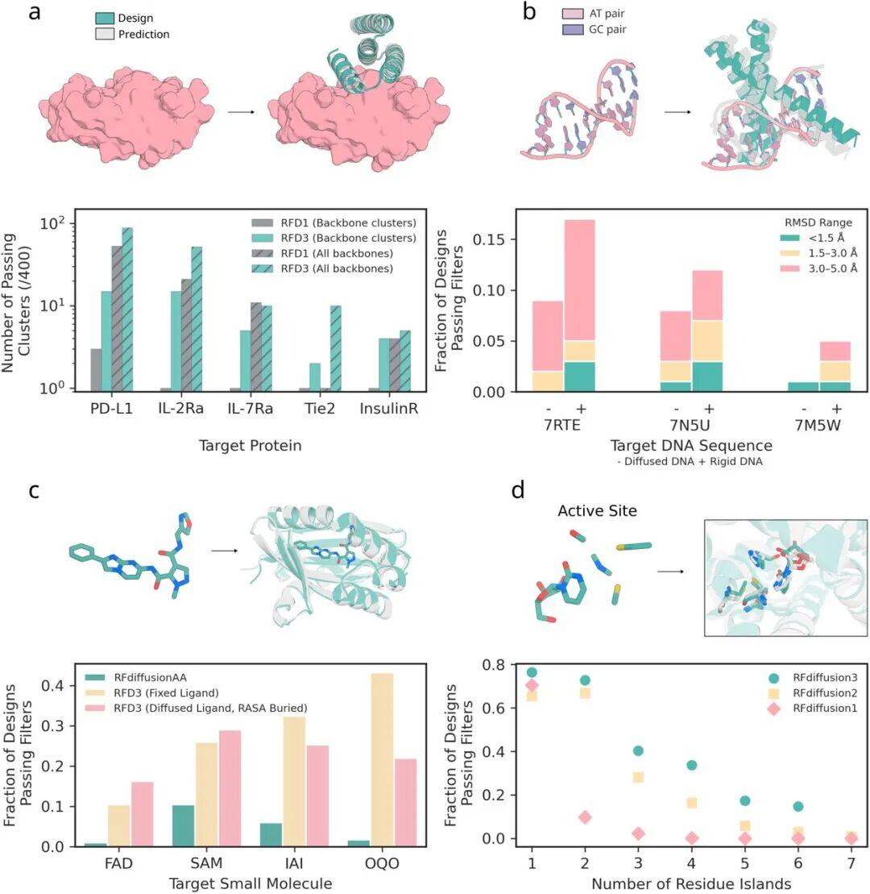
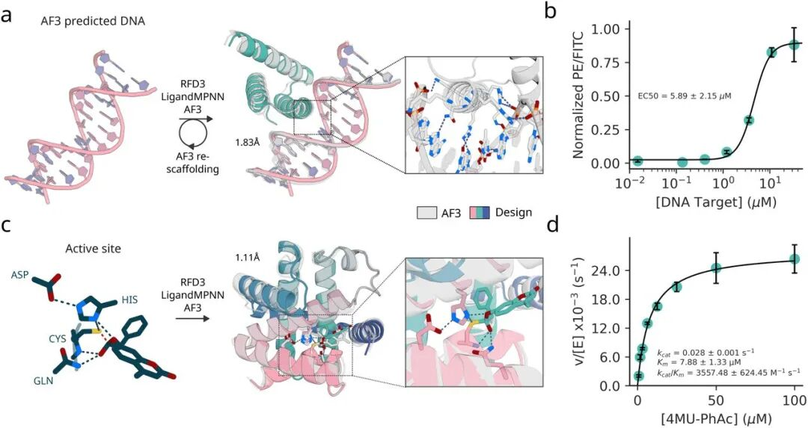

RFdiffusion3 开源了，做蛋白质设计的有福了！！！

RFdiffusion3 回顾
RFdiffusion3 (RFD3) 是基于扩散模型的全原子蛋白质设计新方法。与主要处理蛋白质骨架的前代模型 (RFdiffusion1/2) 不同，RFD3以原子为基本单元进行建模，能够直接生成包含主链和侧链的完整原子坐标，并能协同生成与之结合的配体、核酸等非蛋白质组分。
其网络架构经过精简，参数量降至1.68亿（约为AlphaFold3扩散模块的一半），同时舍弃了部分计算密集的模块。这使得RFD3的计算效率相比RFdiffusion2提升了约一个数量级，为快速、大规模的蛋白质设计提供了可能。
RFdiffusion3 在四大设计任务中全面超越前代模型：
蛋白结合剂：针对5个靶点，成功率与多样性更高。
DNA结合剂：能联合生成蛋白与DNA结构，首次实现高成功率（~8.7%）的从头设计。
小分子结合剂：可协同优化蛋白与配体构象，成功率全面领先。
酶设计：能高效包装原子级活性位点，在90% 的测试案例中表现更优。

实验验证成功：
DNA结合蛋白：设计出具有微摩尔级亲和力的活性蛋白。
人工水解酶：设计出催化效率超越以往的最佳变体

RFdiffusion3 的安装
https://github.com/RosettaCommons/foundry
首先克隆官方的代码仓库：
git clone https://github.com/RosettaCommons/foundry.gitcd foundry
创建一个独立的Conda环境并激活它，确保Python版本为3.12：
conda create -n rfd3 python=3.12 -yconda activate rfd3
使用pip安装 rc-foundry 包。为了一次性安装完整功能，建议使用 [all] 标签。为确保从官方PyPI源稳定获取，推荐指定源地址：
pip install rc-foundry[all] -i https://pypi.org/simple安装完成后，使用Foundry命令行工具下载RFdiffusion3模型权重（文件较大，请耐心等待）：
foundry install rfd3 --checkpoint-dir ./checkpoints下载完成后，运行帮助命令，确认安装成功且命令可用：
foundry --help# foundry list# foundry list-installed
RFdiffusion3 的使用
端到端的设计主要包括：
RFD3 (backbone) → MPNN (sequence) → RF3 (validation) → RMSD comparison
1. 生成骨架（RFD3）
使用RFdiffusion3生成全新的蛋白质三维主链结构，可基于条件（如活性位点）进行精确控制。
from lightning.fabric import seed_everythingfrom rfd3.engine import RFD3InferenceConfig, RFD3InferenceEngine# Set seed for reproducibilityseed_everything(0)# Configure RFD3 inferenceconfig = RFD3InferenceConfig(specification={'length': 80, # Generate 80-residue proteins},diffusion_batch_size=2, # Generate 2 structures per batch)# Initialize engine and run generationmodel = RFD3InferenceEngine(**config)outputs = model.run(inputs=None, # None for unconditional generationout_dir=None, # None to return in memory (no file output)n_batches=1, # Generate 1 batch)# Inspect RFD3 outputs and extract the generated structuresfor idx, data in outputs.items():print(f"Batch {idx}: {len(data)} structure(s)")print(f" Output type: {type(data[0]).__name__}")print(f" AtomArray: {data[0].atom_array}")# Extract the first generated structure for downstream usefirst_key = next(iter(outputs.keys()))atom_array = outputs[first_key][0].atom_array# Visualize the generated structureview(atom_array)
以下为使用RFdiffusion3进行蛋白质设计时最基础的关键参数（模型提供更多高级参数以应对复杂任务）：
length：目标蛋白质的长度（以氨基酸残基数计）。
diffusion_batch_size：每批生成的结构数量。
n_batches：需要运行的批次数。
输出结果：函数将返回一个字典，其中包含多个 RFD3Output 对象，每个对象对应一个生成的结构及其相关信息。
2. 设计序列（MPNN）
使用ProteinMPNN为生成的主链逆向设计最优的氨基酸序列，确保其可折叠并具备功能。
from mpnn.inference_engines.mpnn import MPNNInferenceEngine# Configure MPNN inference engine# See mpnn.utils.inference.MPNN_GLOBAL_INFERENCE_DEFAULTS for all optionsengine_config = {"model_type": "ligand_mpnn", # or "protein_mpnn" for vanilla ProteinMPNN"is_legacy_weights": True, # Required for now for ligand_mpnn and protein_mpnn"out_directory": None, # Return results in memory"write_structures": False,"write_fasta": False,}# Configure per-input inference options# See mpnn.utils.inference.MPNN_PER_INPUT_INFERENCE_DEFAULTS for all optionsinput_configs = [{"batch_size": 10, # Generate 10 sequences per structure"remove_waters": True,}]# Run sequence design on the RFD3-generated backbonemodel = MPNNInferenceEngine(**engine_config)mpnn_outputs = model.run(input_dicts=input_configs, atom_arrays=[atom_array])from biotite.structure import get_residue_startsfrom biotite.sequence import ProteinSequence# Extract and display the designed sequencesprint(f"Generated {len(mpnn_outputs)} designed sequences:\n")for i, item in enumerate(mpnn_outputs):res_starts = get_residue_starts(item.atom_array)# Convert 3-letter codes to 1-letter using Biotiteseq_1letter = ''.join(ProteinSequence.convert_letter_3to1(res_name)for res_name in item.atom_array.res_name[res_starts])print(f"Sequence {i+1}: {seq_1letter}")
核心参数说明
MPNN通过消息传递神经网络，为给定的蛋白质骨架设计可折叠的氨基酸序列。
protein_mpnn / ligand_mpnn：模型选择开关。protein_mpnn用于纯蛋白质设计；ligand_mpnn用于需考虑配体、小分子等环境的序列设计。
batch_size：为每个输入蛋白质骨架生成的候选序列数量。
remove_waters：布尔值，设定是否在序列设计前从输入结构中移除水分子。
3. 验证结构（RF3）
使用RoseTTAFold 3预测设计序列的真实结构，并与初始设计对比，以验证可折叠性与设计成功率。
from rf3.inference_engines.rf3 import RF3InferenceEnginefrom rf3.utils.inference import InferenceInput# Initialize RF3 inference engineinference_engine = RF3InferenceEngine(ckpt_path='rf3', verbose=False)# Create input from the MPNN-designed structure (first design)# This re-folds the sequence to validate it adopts the intended structureinput_structure = InferenceInput.from_atom_array(atom_array, example_id="example_protein")rf3_outputs = inference_engine.run(inputs=input_structure)# Outputs: dict mapping example_id -> list[RF3Output] (multiple models per input)print(f"Output keys: {rf3_outputs.keys()}")print(f"Number of models for 'example_protein': {len(rf3_outputs['example_protein'])}")# Extract the top-ranked predictionrf3_output = rf3_outputs["example_protein"][0]
核心参数说明
RF3 根据氨基酸序列预测蛋白质三维结构。通过重新折叠由 MPNN 设计的序列，可验证其是否能够折叠回 RFD3 生成的目标骨架结构。
核心输出 (RF3Output)：
atom_array：预测的结构，以 Biotite 库的 AtomArray 对象表示，可直接用于结构分析。
summary_confidences：整体置信度指标，包括 pLDDT、PAE、pTM、ranking_score 等。
confidences：逐原子/残基的置信度分数。
关键置信度指标解读：
pLDDT：残基置信度。范围0-1，值越高表示该残基局部结构越可信。
PAE：预测对齐误差。表示预测结构在整体对齐后的预期误差（埃），值越低表示全局构象越可靠。
pTM：预测TM分数。用于评估预测结构与参考结构整体的拓扑相似性。
ranking_score：综合质量评分。模型用于对多个预测结果进行排序的总体分数。
4. 验证 & 输出
在获得RF3预测结构后，需将其与最初由RFD3生成的蛋白质主链进行结构比对。通过计算两者之间 Ca原子（Cα）的RMSD（均方根偏差） 作为核心评估指标。
from biotite.structure import rmsd, superimposefrom atomworks.constants import PROTEIN_BACKBONE_ATOM_NAMESimport numpy as np# Get structures for comparisonaa_generated = atom_array # Original RFD3 backbone (from Section 1)aa_refolded = rf3_output.atom_array # RF3-predicted structure# Filter to backbone atoms (N, CA, C, O)bb_generated = aa_generated[np.isin(aa_generated.atom_name, PROTEIN_BACKBONE_ATOM_NAMES)]bb_refolded = aa_refolded[np.isin(aa_refolded.atom_name, PROTEIN_BACKBONE_ATOM_NAMES)]# Superimpose structures and calculate RMSDbb_refolded_fitted, _ = superimpose(bb_generated, bb_refolded)rmsd_value = rmsd(bb_generated, bb_refolded_fitted)print(f"Backbone RMSD: {rmsd_value:.2f} A")print(f"\nInterpretation: {'Excellent' if rmsd_value < 1.0 else 'Good' if rmsd_value < 2.0 else 'Moderate'} designability")
小Z总结
华盛顿大学蛋白质设计研究所（IPD）近日开源发布的RFdiffusion3模型，实现了全原子级蛋白质扩散设计。该模型能基于原子级约束，精确生成可与DNA、蛋白质及小分子等任意靶标互作的全新蛋白结构，在推理速度上比前代提升约10倍，并在蛋白质-DNA/蛋白质/小分子结合及酶设计等多项任务中性能全面领先。
其核心突破在于：原子级建模实现了对关键化学相互作用的精准控制，并以单一统一模型覆盖多类复杂设计任务。本次开源不仅释放了推理代码与权重，更首次开放训练代码，支持全球开发者基于自有数据微调与二次开发，有望显著加速生物医药、合成生物学及新材料等领域的创新进程。